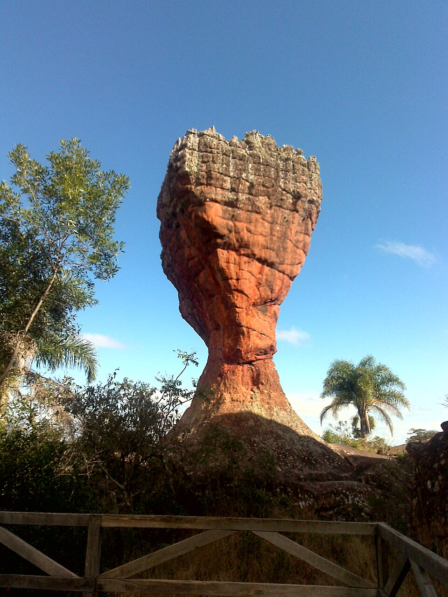
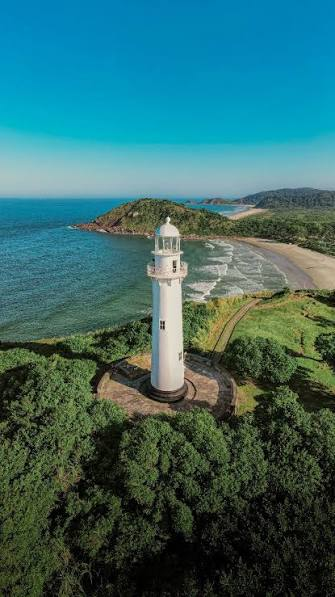

BEM-VINDOS ÀS MARAVILHAS PARANAENSES
Quando exploramos o território paranaense, descobrimos uma riqueza natural que vai muito além das cidades. O estado abriga desde uma das sete maravilhas naturais do mundo até formações rochosas milenares e densas áreas de Mata Atlântica, consolidando-se como um dos principais polos de turismo ecológico do Brasil.

Geologia e Cenários Medievais
O relevo do Paraná guarda verdadeiros tesouros esculpidos pelo tempo. Um dos maiores destaques é o Parque Estadual de Vila Velha, cujos arenitos gigantes criam formas que desafiam a imaginação dos visitantes. Essa impressionante barreira natural de rochas começou a se formar há mais de 300 milhões de anos.

Ecoturismo e Conservação
O Paraná destaca-se na preservação ambiental com reservas que protegem o que resta da nossa rica biodiversidade florestal. A Ilha do Mel e o Parque Nacional do Superagui são santuários intocados de praias desertas e trilhas ecológicas que atraem aventureiros do mundo inteiro.
Principais Atividades: Caminhadas de longo curso, observação de aves raras, montanhismo na Serra do Mar e passeios de caiaque pelos manguezais.
Destinos Populares: Pico Paraná (a montanha mais alta do sul do país), os caminhos históricos da Estrada da Graciosa e as praias ecológicas do litoral.

Curiosidades
Curiosidade 1
Uma curiosidade interessante sobre o Paraná é que o estado abriga as Cataratas do Iguaçu, em Foz do Iguaçu, uma das maiores e mais famosas quedas-d’água do mundo. Elas fazem parte do Parque Nacional do Iguaçu e são consideradas uma das Sete Maravilhas Naturais do Mundo.
Curiosidade 2
Uma curiosidade sobre o Paraná é que a araucária é um dos maiores símbolos do estado. Sua semente, o pinhão, é muito consumida pelos paranaenses, principalmente durante o inverno